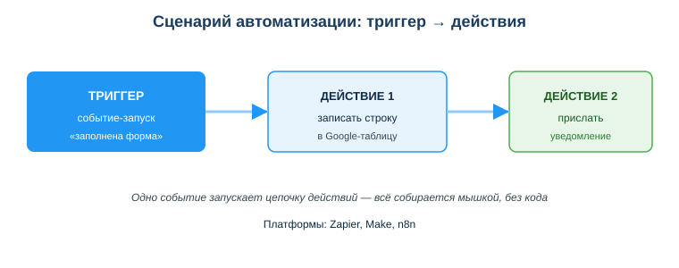
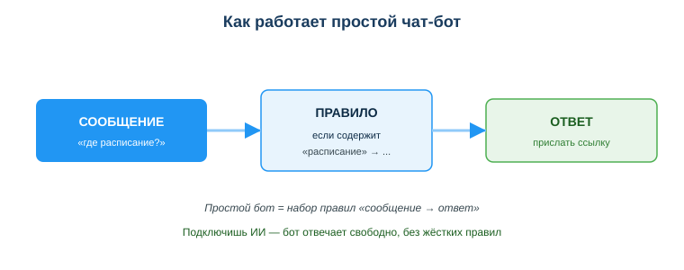

Расширенный учебный материал по теме
Дисциплина: Применение информационно-коммуникационных и цифровых технологий
Результат обучения: РО 2.3 — применение ИИ и цифровых инструментов в разработке · Объём темы: 4 часа
Квалификация: 4S06130103 «Разработчик программного обеспечения»
Представь обычную рутину. Преподавателю каждый день приходят работы студентов через Google-форму. Каждый ответ он вручную переносит в таблицу, а потом сам пишет каждому студенту: «работа получена». На это уходит час в день — пять часов в неделю, больше двадцати часов в месяц. И ведь это не творческая работа, не проверка содержания, а чистая механика: одно и то же событие — и всегда одни и те же действия.
Теперь представь, что весь этот час можно вернуть один раз и навсегда. Не нанимать ассистента, не писать программу, не звать разработчика — а самому, мышкой, за пятнадцать минут собрать цепочку: «пришёл ответ формы → запиши строку в таблицу → отправь студенту уведомление». Настроил один раз — и оно работает само, каждый день, без тебя. Именно это умеют no-code платформы: ты соединяешь готовые блоки, а платформа делает остальное.
Почему это важно лично тебе как будущему разработчику? По двум причинам. Во-первых, ты сам утопаешь в типовой рутине — пересылка файлов, копирование данных из одной системы в другую, ручные уведомления. No-code снимает это с тебя и освобождает время на главное — думать и писать код. Во-вторых, и это важнее: умение быстро собрать рабочий прототип без написания кода — это профессиональный навык. Когда заказчик говорит «а можно вот так?», ты можешь за час показать живой работающий сценарий вместо того, чтобы неделю писать программу, которую потом выбросят. No-code — это твой инструмент быстрой проверки идей [1; 2].
И ещё одно. У этой силы есть оборотная сторона. Сценарий, который ты собрал мышкой, получает доступ к твоей почте, таблицам, файлам, иногда — к персональным данным людей. Дашь ему слишком много прав — и одна ошибка в правиле превратится в утечку или в сотню разосланных «не туда» писем. Поэтому тема не только про «как собрать», но и про «как собрать безопасно». Эти два навыка — скорость и контроль — и есть то, чему ты научишься здесь [3; 5].
После изучения темы ты сможешь:
Начнём с честного определения. No-code платформа — это сервис, в котором ты создаёшь автоматизацию или приложение без написания кода: ты собираешь логику из готовых блоков в визуальном конструкторе, перетаскивая и соединяя их мышкой [2]. Ты не пишешь команды на языке программирования — ты описываешь, что должно произойти, а платформа сама знает, как это сделать технически.
Чтобы понять идею, вспомни конструктор. Когда ты собираешь модель из деталей, ты не отливаешь каждую деталь сам — ты берёшь готовые и соединяешь их по форме. No-code устроен так же: «прочитать письмо», «записать строку в таблицу», «отправить сообщение» — это готовые детали, и твоя работа — выбрать нужные и состыковать в правильном порядке. Платформа берёт на себя всю техническую сложность: как именно подключиться к почте, как авторизоваться в таблице, как отправить запрос — это спрятано внутри блока.
Чем no-code отличается от программирования. Когда ты пишешь код, ты отвечаешь за каждую мелочь: как подключиться к сервису, как обработать ошибку, что делать, если данные пришли в неожиданном формате. Это даёт полный контроль, но требует времени и знаний. No-code меняет сделку: ты теряешь часть контроля (можешь делать только то, что предусмотрели создатели блоков), но выигрываешь в скорости — рабочий сценарий собирается за минуты, а не за дни. Это не «программирование для ленивых», а другой инструмент под другие задачи.
А что такое low-code? Это промежуточный вариант. Low-code-платформа в целом тоже визуальная, но позволяет вставить немного кода там, где готовых блоков не хватает: например, написать маленькое выражение, которое преобразует дату или склеит два поля текста. Различай так: no-code — совсем без кода, рассчитан на людей без программирования; low-code — в основном без кода, но с возможностью «дописать» для тех, кто умеет. На практике граница размыта: одна и та же платформа может быть «no-code» для простых задач и «low-code», когда ты используешь её продвинутые функции.
Когда no-code уместен, а когда нет. Это, пожалуй, самое важное практическое умение темы. No-code — отличный выбор, когда:
No-code плохо подходит и требует настоящего кода, когда:
Простое правило, которое стоит запомнить: простое и срочное — на no-code, сложное и нагруженное — кодом. No-code не заменяет программирование, а дополняет его. Зрелый разработчик не спорит «что лучше», а выбирает инструмент под задачу: иногда честнее за полчаса собрать Zap, чем за неделю писать сервис, который делает то же самое.
Теперь — ядро темы. Почти все no-code платформы автоматизации (Zapier, Make, n8n) работают по одной и той же схеме: триггер → действия. Если ты поймёшь эту схему, ты поймёшь принцип всех таких платформ сразу. Посмотри на схему «Сценарий автоматизации: триггер и действия» (приложение А, assets/35_shema-trigger-deystviya.svg): слева — событие-триггер, от него стрелка к цепочке блоков-действий. Читается слева направо: что произошло → что сделать в ответ.

Триггер — это событие, которое запускает сценарий. Сценарий не работает постоянно — он «спит» и просыпается только тогда, когда случается триггер. Примеры триггеров:
Обрати внимание: триггер — это всегда факт, что что-то случилось. Он отвечает на вопрос «когда запускать?». Если триггер не сработал — сценарий не запустится, и ничего не произойдёт. Это важно понимать: сценарий реагирует только на своё событие и ни на что больше.
Действие — это операция, которую сценарий выполняет в ответ. После триггера платформа выполняет одно или несколько действий по порядку. Примеры действий:
Действие отвечает на вопрос «что сделать?». И вот ключевая мысль: один триггер может запускать сразу несколько действий подряд. Сценарий — это не «событие → один ответ», а «событие → цепочка ответов». Платформа выполнит их по очереди, передавая данные от шага к шагу.
Как данные текут по сценарию. Это часто упускают новички. Триггер не просто «будит» сценарий — он приносит с собой данные. Когда срабатывает триггер «заполнена форма», вместе с ним приходят сами ответы: имя, текст, оценка. Эти данные ты подставляешь в действия. В действии «записать строку» ты говоришь: в колонку «Имя» положи поле «Имя» из формы, в колонку «Дата» — время отправки. Платформа сама протянет данные от триггера к действиям. Поэтому при сборке сценария ты не только выбираешь блоки, но и сопоставляешь поля: откуда взять и куда положить.
Полный пример сценария. Разберём задачу преподавателя из введения по шагам:
Всё это собрано мышкой, без единой строки кода. Настроил один раз — и тот самый час в день освобождается навсегда. Вот почему схема «триггер → действия» — это не теория, а буквально инструкция, по которой ты соберёшь свой первый рабочий сценарий.
Алгоритм проектирования сценария (применяй к любой задаче):
Схема «триггер → действия» — общая, но платформы, которые её реализуют, немного разные. Разберём две самые известные, чтобы ты понимал, о чём речь, когда увидишь их названия в документации или вакансиях.
Zapier — одна из самых популярных платформ автоматизации. Её сценарий называется Zap. Идеология Zapier — максимальная простота: ты выбираешь триггер из списка приложений (Gmail, Google Sheets, Telegram и сотни других), затем добавляешь действия, тоже выбирая из готовых. В классическом виде Zap — это линейная цепочка: триггер, потом действия одно за другим. Zapier рассчитан на то, чтобы человек без технического образования собрал рабочую автоматизацию за минуты. В документации Zapier базовое понятие так и описано: Zap состоит из триггера и одного или нескольких действий [1].
Make (раньше назывался Integromat) — платформа с более визуальным и гибким подходом. Её сценарий называется scenario, и собирается он не как список, а как схема из соединённых кружков-модулей на холсте. Это даёт больше наглядности и гибкости: легче строить ветвления (если данные такие — иди сюда, иначе — туда), работать с несколькими источниками, видеть весь поток данных целиком. Make чуть сложнее для первого знакомства, но мощнее для нетривиальных сценариев [2].
Что у них общего и в чём разница. Общее — главное: обе работают по схеме «триггер → действия», обе соединяют готовые сервисы без кода, обе экономят рутину. Разница — в стиле: Zapier проще и быстрее для линейных задач, Make нагляднее и гибче для разветвлённых. Есть и третьи платформы (например, n8n, которую можно развернуть на своём сервере), но принцип у всех один. Поэтому не заучивай интерфейс конкретной платформы — он меняется. Запомни схему «триггер → действия»: освоив её на одной платформе, ты быстро разберёшься в любой другой.
Ещё примеры сценариев — чтобы ты увидел, насколько широко применима схема:
Видишь закономерность? Меняются сервисы и данные, но скелет всегда один: что-то случилось → выполни цепочку действий.
Вторая большая часть темы — чат-боты. Чат-бот — это программа, которая ведёт диалог: получает сообщение от человека и отвечает. Боты живут в мессенджерах, на сайтах, в соцсетях. Самый частый пример, который ты видел, — бот техподдержки: пишешь вопрос, он отвечает.
Простейший бот работает по правилам. Правило — это пара «сообщение → ответ»: если во входящем сообщении есть определённое условие, бот выдаёт заранее заготовленный ответ. Посмотри на схему «Как работает простой чат-бот» (приложение Б, assets/35_shema-prostoy-bot.svg): входящее сообщение проходит через набор правил; нашлось подходящее — бот отвечает заготовкой; не нашлось — отвечает «не понял» или передаёт человеку.

Разложим цепочку сообщение → правило → ответ на шаги:
Заметь сходство с разделом 4.2: это та же логика «событие → реакция», только событие — входящее сообщение, а реакция — ответ. Поэтому простого бота тоже можно собрать без кода: в специальных конструкторах ботов или прямо на no-code платформе ты задаёшь триггеры (входящие сообщения с определёнными словами) и ответы на них.
Пример набора правил для учебного бота:
Сильные и слабые стороны бота по правилам. Сильные: он предсказуем — ты точно знаешь, что он ответит, потому что ответы заготовлены тобой; его легко собрать и проверить; он не «выдумывает». Слабые: он жёсткий — понимает только то, что предусмотрено правилами. Спросишь чуть иначе, словом, которого нет в правиле, — и бот не поймёт. Чем больше вариантов вопросов, тем больше правил надо прописать вручную, и в какой-то момент это становится неподъёмным. Именно из этого ограничения вырастает следующий шаг — боты с ИИ.
Что если подключить к боту языковую модель (ИИ)? Тогда бот перестаёт зависеть от жёстких правил. Бот с ИИ не ищет совпадение по списку «сообщение → ответ», а формирует ответ свободно — понимает смысл вопроса, даже если он задан непривычными словами, и отвечает связным текстом. Это огромный скачок в удобстве: один ИИ-бот может отвечать на тысячи вариантов вопросов, для которых пришлось бы писать тысячи правил.
Но за свободу приходится платить. Вспомни три свойства ИИ, которые ты разбирал раньше в курсе, — они полностью относятся и к ИИ-боту [4]:
Поэтому выбор «правила или ИИ» — это выбор между предсказуемостью и гибкостью. Если ответы должны быть точными и проверенными (юридическая информация, официальные сроки, цены) — надёжнее правила или ИИ с жёсткими ограничениями и проверкой. Если важна живость диалога и охват многих вопросов, а цена ошибки невелика — уместен ИИ-бот, но с присмотром: ограничь темы, проверяй ответы, предусмотри передачу сложных случаев человеку. Грамотный подход часто гибридный: типовые точные вопросы — по правилам, остальное — ИИ. Это и есть человекоцентричный принцип: ИИ усиливает бота, но контроль и ответственность остаются за человеком [4].
Теперь — про безопасность, и это не формальность, а часть профессии. Когда ты собираешь сценарий или бота, ты даёшь ему доступ к своим данным: к почте, таблицам, файлам, контактам. Сценарий действует от твоего имени — он может читать, записывать, отправлять. И вот здесь кроется главный риск темы.
В чём опасность. Разберём конкретный случай из упражнений: сценарию дали полный доступ к почте и право пересылать любые письма. Что может пойти не так? Во-первых, утечка персональных данных: если правило срабатывает шире, чем задумано, сценарий перешлёт письма с чужими ФИО, телефонами, документами туда, куда не следует. Во-вторых, нежелательные действия: ошибка в условии — и вместо одного письма уходят сотни, или письма уходят не тем адресатам. В-третьих, если доступ к самому сценарию или платформе перехватят, злоумышленник получит ровно столько власти над твоими данными, сколько ты выдал. Чем шире права — тем больше ущерб от любой ошибки.
Вспомни и про закон. Персональные данные — это не только ФИО, но и ИИН, телефон, адрес, данные документов; их обработку в Казахстане регулирует Закон РК «О персональных данных и их защите» № 94-V [3]. Передать реальные данные людей во внешний сервис без оснований — это нарушение, и «я просто автоматизировал» не оправдание.
Принцип минимума прав — главное правило защиты. Звучит просто: давай сценарию или боту ровно столько доступа, сколько нужно для задачи, и ни каплей больше. Если сценарию нужно только добавлять строки в одну таблицу — не давай ему права удалять или читать всю почту. Если боту нужно отвечать про расписание — не давай ему доступ к личным сообщениям и базе студентов. Каждое лишнее право — это лишний риск без всякой пользы.
Главная ошибка темы и как её избежать. Типичная ошибка новичка — считать, что no-code заменяет программирование везде, и от удобства давать сценарию или боту полный доступ «чтобы точно работало». Это ошибка по двум линиям сразу: сложную логику и нагрузку no-code не вытянет (нужен код), а неограниченный доступ грозит утечкой и нежелательными действиями. Правильно: no-code — для прототипов и рутины; сложное — кодом; сценарию и боту — минимум прав, и всегда проверяй, что именно ты автоматизируешь.
Зачем разработчику, который умеет писать код, вообще no-code? Кажется, что это «инструмент для тех, кто не программирует». На деле опытные разработчики используют no-code осознанно, и вот где:
Главное — держать в голове границу: no-code не заменяет тебя как разработчика, а снимает с тебя то, что не стоит твоего кода. Простое и срочное отдай платформе, силы береги на сложное и важное. Это и есть зрелое владение инструментом.
Пример 1 — автоматизация рутины преподавателя (полный разбор). Задача: студент сдаёт работу через форму → работа должна попасть в журнал и студент должен получить подтверждение. Собираем сценарий: триггер «новый ответ формы» → действие 1 «добавить строку в таблицу» (имя, ссылка, дата из полей формы) → действие 2 «отправить студенту уведомление» (адрес из формы).
Разбор: классический случай для no-code — задача типовая, повторяющаяся, логика линейная. Один триггер запускает два действия; данные текут от триггера в оба действия. Час ручной работы в день превращается в пятнадцать минут настройки один раз. Доступ дан минимальный: чтение ответов одной формы, запись в одну таблицу, отправка сообщений — и ничего сверх этого.
Пример 2 — где no-code не подходит. Задача: «движок 3D-игры с физикой объектов в реальном времени».
Разбор: это сложная уникальная логика с высокими требованиями к производительности. Готовых блоков «триггер → действие» здесь нет, и быть не может. Это территория настоящего кода. Сравни с задачей «при заполнении формы записать ответ в таблицу» — вот она идеально ложится на no-code. Умение различать эти два типа задач — и есть главный практический вывод темы.
Пример 3 — найди риск. Сценарию выдали полный доступ к почте и право пересылать любые письма по широкому условию.
Разбор: опасность двойная — утечка персональных данных (перешлются письма с чужими ФИО, ИИН, документами) и нежелательная массовая пересылка при ошибке в условии. Правильное решение: сузить триггер (конкретный отправитель/тема), дать только право чтения и отправки нужного типа писем, а не «любых», протестировать на безопасных примерах. Это прямое применение принципа минимума прав [3].
Дополнительная литература:
Нормативные источники РК:
Электронные ресурсы и официальная документация:
Международные рамки:
assets/35_shema-trigger-deystviya.svg. Читается слева направо: событие-триггер запускает цепочку действий; один триггер может вести к нескольким действиям подряд, данные текут от триггера к действиям.assets/35_shema-prostoy-bot.svg. Входящее сообщение проходит через правила: нашлось подходящее — бот выдаёт заготовленный ответ; не нашлось — отвечает «не понял» или передаёт человеку.Материал подготовлен на основе урока темы (urok.md) и источников раздела 11; он расширяет и углубляет содержание урока для самостоятельного изучения. Источники приведены главами и ссылками (без номеров страниц); нормативные акты — с реквизитами.
Материал разработан рабочей группой ТОО «Колледж Хекслет Казахстан» и одобрен к использованию в обучении решением Педагогического совета.